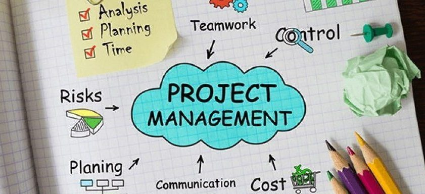

projects
project

Mijn portfolio website heb ik gemaakt voor een school project waarbij ik HTML en CSS
moest gebruiken. Dit project moest persoonlijk gemaakt worden niet met behulp van een team.
Hiervoor heb ik 10 weken de tijd gekregen om het af te ronden en te presenteren.
project 2
Eén van de volgende projecten van mij zijn management en communicatie. wat ik kan vertellen over dit project is dat ik met dit project ga leren hoe ik moet communiceren binnen mijn projectteam, wat ik ook ga doen tijdens dit project is begrijpen en weten wat er gedaan moet worden en hoe ik dat ga moeten toepassen.